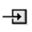

Table 1 lists the components available from the route editor's palette.
Table 1. Components
| Icon | Name | Use |
|---|---|---|

| Generic | Provides access to the Select component wizard from which to select any of the supported Camel connector components, including those listed in the Palette. |

| Bean | Binds beans to Camel message exchanges |

| Log | Creates log messages using the Simple language |
| Process | Process the message using a custom processor |
Table 2 describe the routing patterns available from the route editor palette.
Table 2. Message Routing
| Icon | Name | Use |
|---|---|---|
| Aggregate | Aggregates many messages into a single message | |
 | Choice | Routes messages based on a series of predicates. (This is one of three components that make up a content-based router.) |

| Filter | Filters messages before passing them to a resource |
|
| Hystrix | Lets an application integrate with Netflix Hystrix, which can provide a circuit breaker in Camel routes |

| Idempotent Consumer | Filters out duplicate messages |
| Load Balance | Balances message processing among a number of nodes | |
| Multicast | Routes a message to a number of endpoints | |
|  | Otherwise | Route to be executed when all other choices evaluate to false. (This is one of three components that make up a content-based router.) |

| Pipeline | Executes a sequence of processors in order |
| Recipient List | Routes messages to a number of dynamically specified recipients | |

| Resequence | Resequences messages based on an expression |
| Route | Contains all elements that make up an individual route in a routing context | |

| Routing Slip | Routes a message through a series of steps that are determined at runtime |

| Sort | Sorts the contents of the message |

| Split | Splits a message into pieces that can processed separately |
| When | Triggers a route when an expression evaluates to true. (This is one of three components that make up a content-based router.) | |

| Wire Tap | Routes a copy of a message to a secondary destination while passing the original message to the actual recipient |
Table 3 describes the control flow patterns available from the route editor palette.
Table 3. Control flow
| Icon | Name | Use |
|---|---|---|
| doCatch | Catches exceptions as part of a try,
catch, finally
block | |
| Delay | Delays processing for a set length of time | |
| doFinally | Node traversed when a try,
catch, finally
block exits | |
| Intercept | Intercepts messages at each step in the message flow | |
| Intercept From | Intercepts incoming messages | |
| Intercept Send to Endpoint | Intercepts messages sent to a specified endpoint | |
| Loop | Processes a message multiple times | |
| On Completion | Route to be executed when normal route processing completes | |
| On Exception | Route to be executed when an exception is thrown | |
| Rollback | Forces a rollback of a transacted route by throwing
RollbackExchangeException | |

| Throttle | Controls the number of messages passed to the next node in a given time period |
| Throw Exception | Throws an exception | |
|
| Transacted | Marks route as a transaction |
| doTry | Marks the beginning of a try,
catch, finally
block |
Table 4 describes the transformation patterns available from the route editor palette.
Table 4. Transformation
| Icon | Name | Use Case |
|---|---|---|

| Convert Body To | Converts the message body to a form usable by the next endpoint |

| Enrich | Enriches a message with data retrieved by a producer from a secondary resource |

| InOnly | One way exchange pattern where no response is produced (Event Message pattern) |

| InOut | Exchange pattern where a response is produced |
| Marshal | Marshals data into a format for transmission over a transport or component | |
| Poll Enrich | Enriches messages with data retrieved from a polling consumer | |

| Remove Header | Removes a named header from the message |

| Remove Headers | Removes message headers whose name matches a specified pattern |

| Remove Property | Removes a named property from the message exchange |

| Remove Properties | Removes propeties from the message exchange that match a specified name pattern |
|
| Set Body | Sets the contents of the message body |

| Set Exchange Pattern | Sets the exchange pattern for the route |

| Set Fault Body | Sets the contents of a fault message body |

| Set Header | Sets the value of a message header |

| Set Out Header | Sets the value of a header on the outbound message |

| Set Property | Sets a named property on the message exchange |
|
| Transform | Transforms the message based on an expression |

| Unmarshal | Converts the message data from the wire into a bean that Apache Camel processors can consume |
Table 5 describes the patterns on the Miscellaneous section of the palette.
Table 5. Miscellaneous
| Icon | Name | Use |
|---|---|---|
| Aop | Does processing before and after the route is completed. (This pattern is deprecated in Apache Camel.) | |
| Policy | Defines a policy the route will use | |

| Sample | Extract a sample of the exchanges passing through a route |
| Stop | Stops processing of the current message | |
| Threads | Specifies that all steps after this node are processed asynchronously | |

| Validate | Validates a message based on an expression |